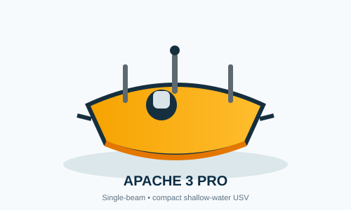
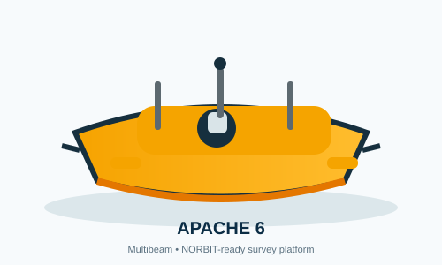
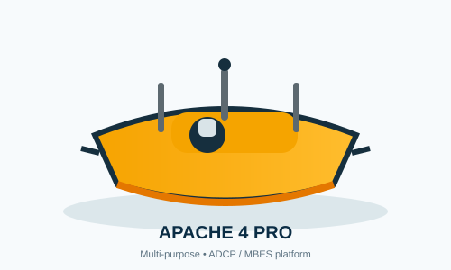

COMPACT / SINGLE-BEAM
APACHE 3 Pro
Platform ringkas untuk survei batimetri perairan dangkal dengan GNSS RTK + INS dan single-beam echosounder.
7 m/s max speed35 kg payload10 cm draft
Official product ↗Pusat informasi praktis untuk APACHE 3 Pro, APACHE 4 Pro, dan APACHE 6 — mulai dari platform, komponen payload, manual, video, hingga sumber resmi CHCNAV.

Pilih platform berdasarkan kedalaman, payload, dan jenis pekerjaan hidrografi yang kamu kerjakan.

Platform ringkas untuk survei batimetri perairan dangkal dengan GNSS RTK + INS dan single-beam echosounder.

Platform serbaguna untuk hidrologi, batimetri, ADCP, MBES, side-scan sonar, dan sensor kualitas air.
Platform triple-hull untuk survei batimetri resolusi tinggi, positioning objek bawah air, dan dukungan konstruksi lepas pantai.
Single-beam + compact deployment
ADCP / MBES / modular payload
NORBIT MBES + advanced mapping
Komponen utama dan opsi payload yang umum digunakan pada konfigurasi Apache. Klik kartu untuk melihat detail singkat.
Kamera omnidirectional untuk pemantauan visual dan situational awareness.

Posisi dan heading berpresisi tinggi untuk navigasi USV.
Single-beam sounder untuk pengukuran kedalaman.

Antena komunikasi untuk koneksi dan pertukaran data.
Antena komunikasi remote controller.
Sensor/radar untuk mendeteksi hambatan di depan USV.
Pelampung samping untuk stabilitas dan dukungan struktur.
Lampu navigasi untuk status dan visibilitas operasi.
Sistem motor dan propeller untuk gerak dan manuver.
Acoustic Doppler Current Profiler untuk profil kecepatan dan debit aliran.
Multibeam Echosounder untuk pemetaan dasar perairan beresolusi tinggi.

Konfigurasi multibeam Norbit yang dioptimalkan untuk APACHE 6.
Modul baterai untuk suplai energi dan endurance misi.
Pelindung lambung terhadap benturan.
Mounting modular untuk sensor survei tambahan.

Lampu indikator status perangkat/positioning.
Hub ini dibuat supaya alur kerja lapangan lebih mudah dipahami: pilih platform → pilih payload → buka manual → akses sumber resmi → lanjut ke video dan dokumentasi.
Link berikut diarahkan ke sumber resmi CHCNAV agar dokumentasi tetap mudah diperbarui.
Spesifikasi utama di halaman ini diringkas dari halaman produk CHCNAV dan knowledge base resminya.